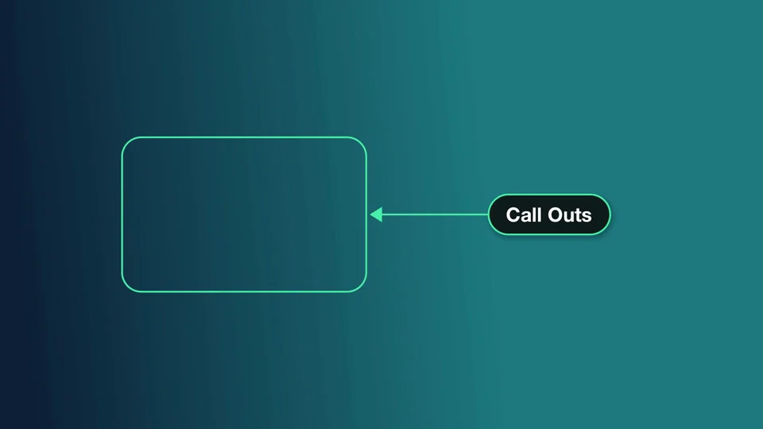
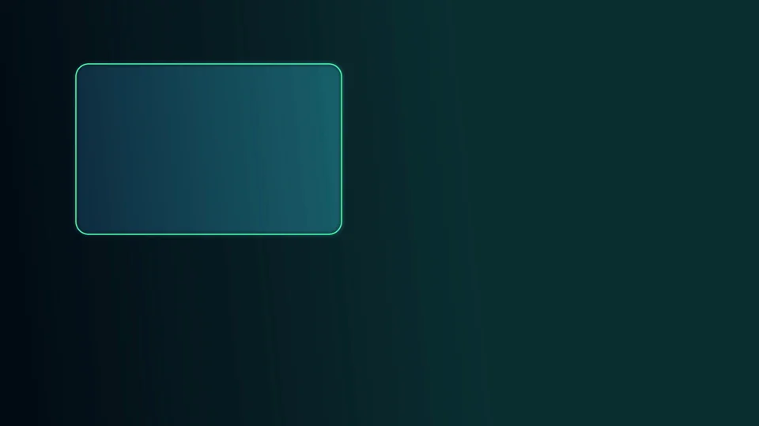
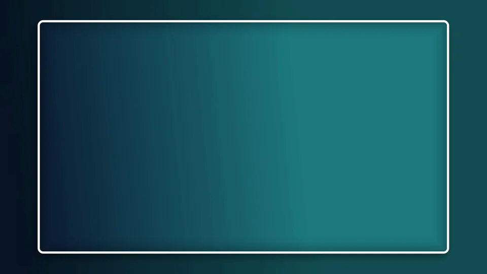
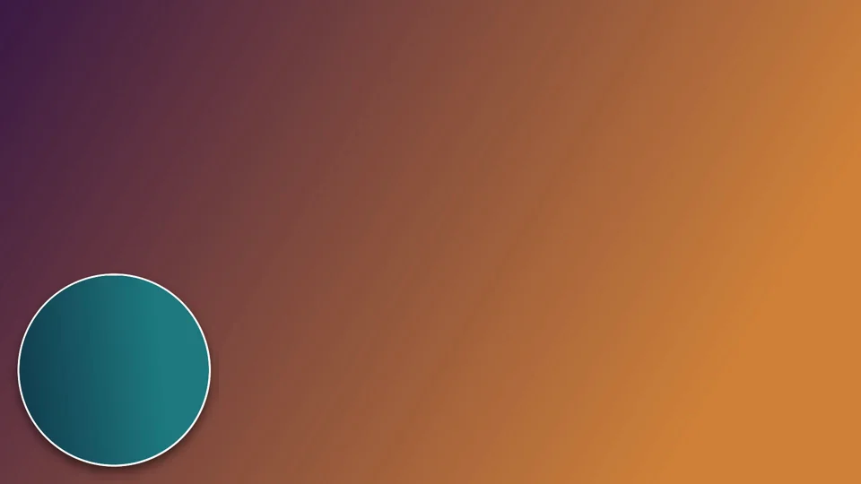
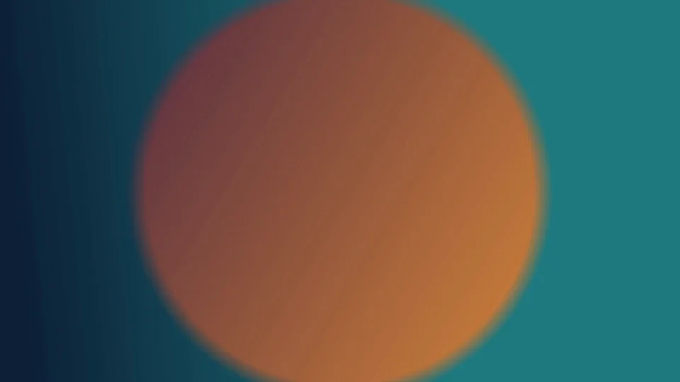
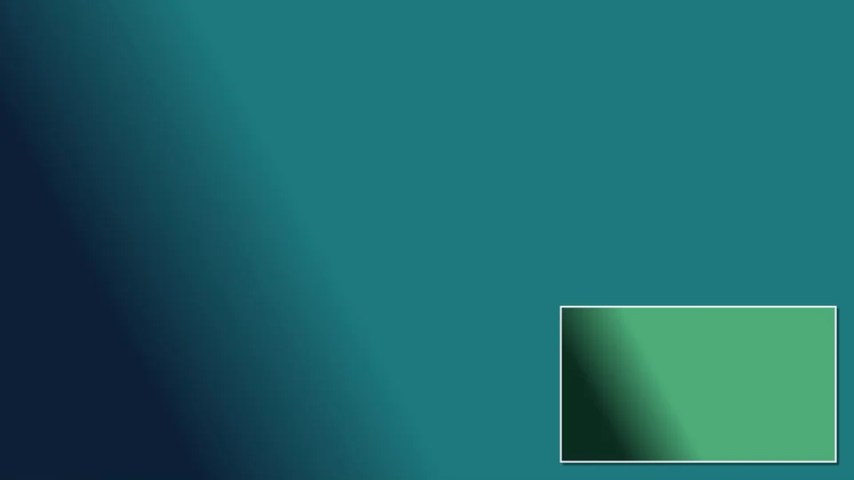
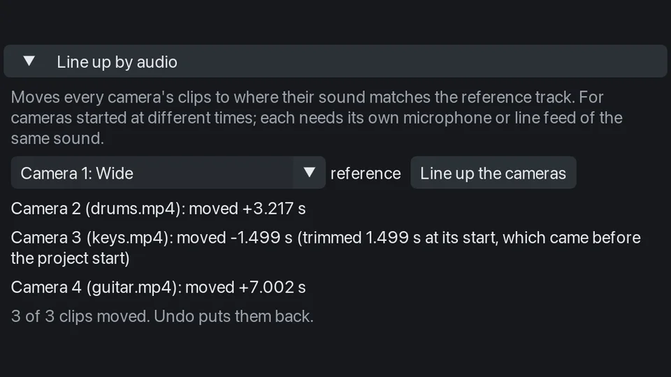
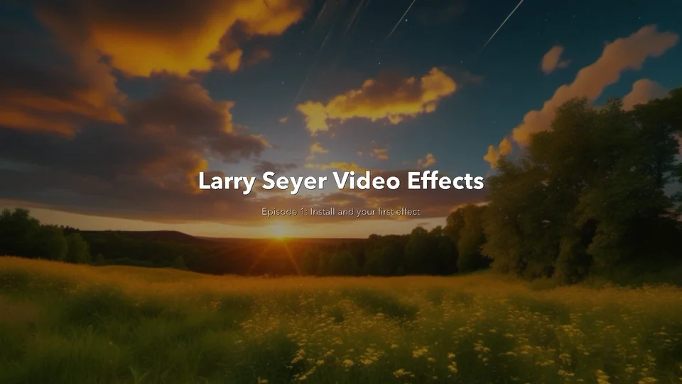

Larry Seyer Video Effects for Reaper
Forty-three video effects for REAPER's Video Processor, with a proper control panel. Free.
Why I Built It
REAPER is my video editor as well as my DAW. It cuts, crossfades and renders video very well, but its video effects stop at the basics: a brightness control, a few wipes and a plain text overlay. For every show and every tutorial I was either building graphics in another program or doing without.
This is the toolkit I made so the whole video gets finished in REAPER: grading, titles, callouts, zooms, transitions and the rest, each one an ordinary Video Processor preset that renders anywhere the presets are installed.
Key Features
- Professional color gradingLift, gamma, gain and offset wheels, curves, hue curves, isolate-a-color and one-knob looks
- Titles that animate themselvesLower thirds, title cards and rolling credits take their text from the item name, and the item's fades set the animation
- A tutorial toolkitCallouts with an arrow and label, zoom to region, spotlight, magnifier, and blur for anything private on screen
- Transitions on crossfadesPut one on a track and every crossfade on it becomes a dissolve, push, zoom, shape wipe or light leak
- Placement and framingPicture-in-picture, logos, pan and zoom moves, corner pin, borders and drop shadows, vertical reframing for short-form video
- A multicam switcherCut between up to nine cameras while it plays, lined up for you by their sound: press a number or click a camera in the video window, with a cut or a transition on every switch
- A real control panelColor wheels, curve editors, a frame to drag positions on, and a keyframe button beside every control
- Ready for AIA complete reference written for AI assistants, so one can build a video with every effect correctly
Screenshots








Tutorials
Tutorial videos on YouTube, starting with installing the pack and your first effect.
Get It
Install it with ReaPack. It also needs the free ReaImGui extension, which you install from the same ReaPack window.
- In REAPER, choose Extensions > ReaPack > Import repositories and paste
https://raw.githubusercontent.com/larryseyer/larry-seyer-video-effects/main/index.xml - Choose Extensions > ReaPack > Browse packages, type Larry Seyer in the filter, right-click Larry Seyer Video Effects and choose Install. If you do not have ReaImGui yet, type ReaImGui in the filter and install it too. Click Apply, and restart REAPER if ReaPack asks you to.
- Run it once: open Actions > Show action list, search Larry Seyer Video Effects and run it. The panel opens and adds the 43 LS presets to the Video Processor. ReaPack cannot add presets by itself, so until you do this they are not there. If ReaImGui is missing, the panel offers to open ReaPack on it.
The first tutorial video covers installing.
Updates arrive with Extensions > ReaPack > Synchronize packages; the panel brings the presets up to date the next time it opens.
Licensing
Larry Seyer Video Effects for Reaper is free and open source under the MIT license. Copyright © 2026 Larry Seyer.